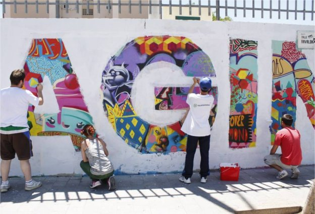
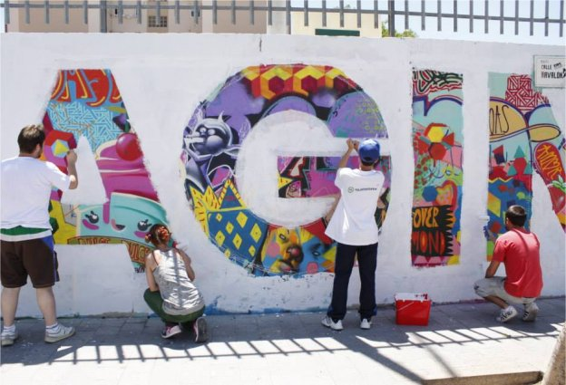
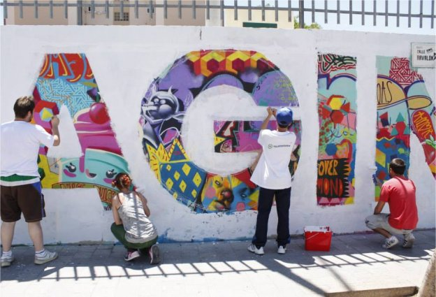
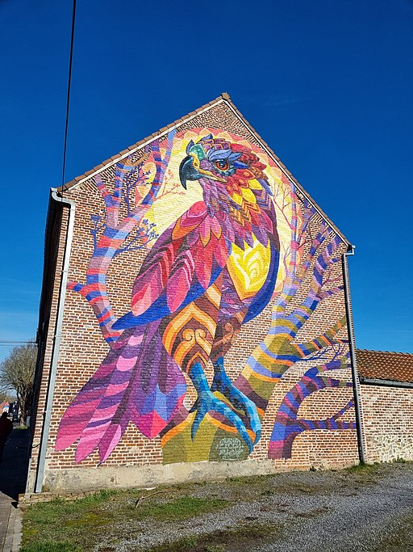

QUÉ ES
GALERIA
El término arte urbano o arte callejero, hace
referencia a todo el arte de la calle. El arte urbano
engloba tanto al grafiti como a otras diversas
formas de expresión artística callejera. Desde
mediados de los años 1990 el término street art o, de
forma más específica, Post-Graffiti se utiliza para
describir el trabajo de un conjunto heterogéneo de
artistas que han desarrollado un modo de expresión
artística en las calles mediante el uso de diversas
técnicas (plantillas, pósteres, pegatinas, murales,
grafitis...), que se alejan del famoso grafiti pero no
siempre es en paredes pues ahora en la actualidad es
posiblemente, incluso, dibujar en forma experta 3D


 



ARTE
URBANO
URBANO
referencia a todo el arte de la calle. El arte urbano
engloba tanto al grafiti como a otras diversas
formas de expresión artística callejera. Desde
mediados de los años 1990 el término street art o, de
forma más específica, Post-Graffiti se utiliza para
describir el trabajo de un conjunto heterogéneo de
artistas que han desarrollado un modo de expresión
artística en las calles mediante el uso de diversas
técnicas (plantillas, pósteres, pegatinas, murales,
grafitis...), que se alejan del famoso grafiti pero no
siempre es en paredes pues ahora en la actualidad es
posiblemente, incluso, dibujar en forma experta 3D

